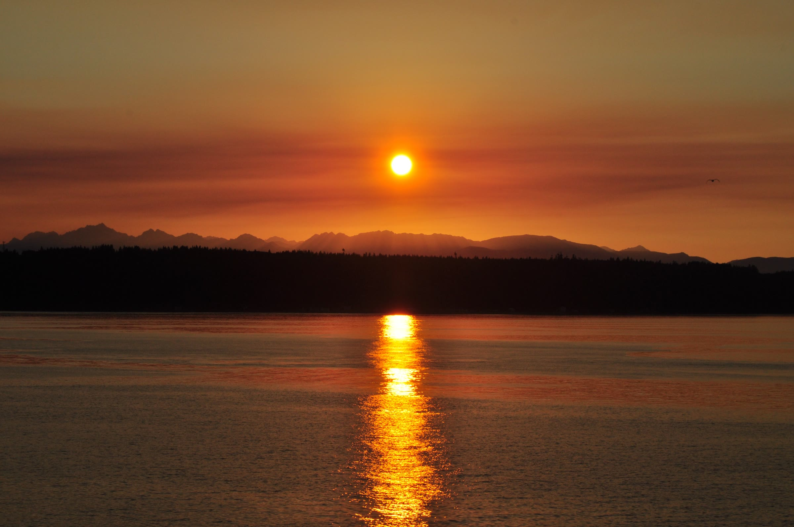

DiscNW · Design direction 04 of 19 · Experimental
Last Light
Seattle almanacOne year · five sunsets
In the Northwest, the season is the light. June games end past nine in gold; December practice starts after a 4:20 sunset. This page is one year of Seattle sky — scroll it, and every DiscNW program is waiting at the hour it’s actually played.
↓ Begin at the solstice

Ch. 01 · June 21Sunset 9:11 PM · daylight 15h 59m
The nine-o’clock game,played in gold.
At the solstice, Seattle holds almost sixteen hours of daylight, and the Summer Mixed Hat League spends the best of them. You register alone; a draft turns strangers into a team; a season turns the team into your people. First pull at 6:30 — the game ends, and the light still hasn’t.
MidsummerAfter the solstice, the evenings give back ~2 minutes a day
Nobody notices in July. The games are too good.
Ch. 02 · July 151:30 PM, full sun · sunset not until 9:01
The top of the daybelongs to the kids.
Summer Youth Ultimate Camps run at the day’s full height — ages 7 to 18, all levels, a week at a time, under the only reliably blue sky Seattle issues all year. A camper arrives owning zero throws and leaves arguing hammer technique. And when grass gets too easy, Sea Plastic moves the whole thing to sand.


SeptemberSchool starts · by late month, sunset slips under 7
The light starts leaving early. The season just moves to meet it.
Ch. 03 · October 8Sunset 6:31 PM · daylight 11h 26m
After the last bell,before the last light.
School lets out around three; October keeps the field lit until 6:31. The fall middle school and high school leagues fit entire seasons into that amber window — and every game, at every age, runs on Spirit of the Game: zero referees, players making their own calls, seasons that teach the talking as much as the throwing.

Seattle≈ 37 in / yr
New York≈ 46 in / yr
Less rain than New York — just spread across roughly 150 days. Drizzle rarely cancels ultimate here. Wind changes more games than rain ever has.
Ch. 04 · December 21Sunset 4:20 PM · daylight 8h 25m
The blue hourseason.
The shortest day gives Seattle eight hours and twenty-five minutes, and hands the evening to the gyms. Winter is when the DiscNW Coaching Collective builds next season’s sideline voices, and when footwork gets quietly better under bright indoor light while the Sound goes blue outside the door.

Nothing looks like it’s growing in winter. Everything is. The coach who runs your kid’s April practice is in a gym right now, being coached — that’s the Collective’s whole trade: this season’s players into next season’s teachers, school teams and club alike.
The turn · Dec 218h 25m is the floor — every day after this one is longer
By February the evenings grow about three minutes a day. You can feel it from the sideline before you can prove it.
Ch. 05 · April 25Sunset 8:14 PM · gaining ~3 minutes a day
The light comes back.So do we.
By late April the sunset is past eight again, and the fields at Burlington fill with Spring Reign — the world’s largest mixed youth ultimate tournament, played here every spring. One weekend, every age bracket, a disc in the air at all times. Ten thousand players get their seasons back this month.


The year on this page never ends in the dark. Neither does the real one — since 1995, at Potlatch, it has always come back around to spring.
About this direction
13 — Last Light
The page is a year-long light clock. In the Pacific Northwest the season is the light — June games end past 9 PM, December practice starts after a 4:20 sunset — so the whole site becomes one continuous vertical sky, and every DiscNW program lives at the hour of light it is actually played in. The year deliberately closes brightening, at Spring Reign, not darkening: the emotional arc is the light comes back — register for spring.
- The mechanism
- Five real Seattle skies as pure CSS gradients, crossfaded by an eased rAF loop under your scroll — no drawn suns, no illustrated skylines, only gradient light, real photography, and data. Every chapter is labeled with its real sunset time; the gradients are the calendar. Without JS or with reduced motion, the skies simply stack — the settled year, complete.
- Signature
- The ephemeris everywhere: a topbar almanac readout that ticks over as the sky changes hour, sunset-time chips that flip up like almanac lines, a daylight-hours bar chart that doubles as chapter navigation — and the white formline mark holding the top corner as the evening’s constant until it lands, large, on April.
- Palette — the five skies
-
Zenith Ink
#14112ANine-PM Gold#E1955AOctober Amber#D08238Blue Hour#3C5480Returning Peach#F0B87E - Type
- Fraunces — optical-size display serif, warm at enormous scale, italic where the light turns · Spline Sans Mono — the ephemeris voice: sunset times, chips, buttons, and the almanac readout.
- Motion
- Two house curves. The sky eases after your scroll on a damped rAF crossfade (opacity only, layers never repaint); headlines rise from masks as their sky arrives; photographs open under clip-path curtains with a 1.05 settle; the winter card glows warm against the blue. Base styles are the settled page; a sweep lands everything on-screen by 2.3 seconds.
- Choose this if
- The calendar is your best argument — you want visitors to feel why a Seattle season is worth registering for before anyone tells them, and one scroll to explain the entire year, ending on the spring CTA.
- Think twice if
- You need a dense utility homepage — standings, schedules, dozens of links above the fold. A light clock wants very few things on stage at once, and its gradients ask for restraint from every future content editor.